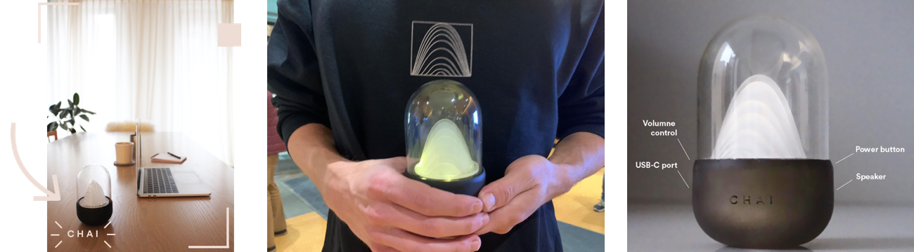
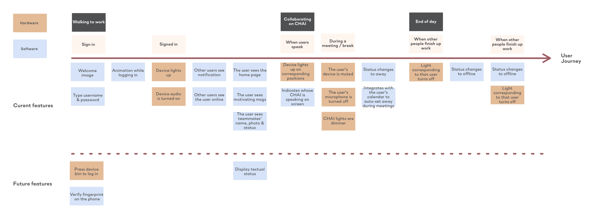
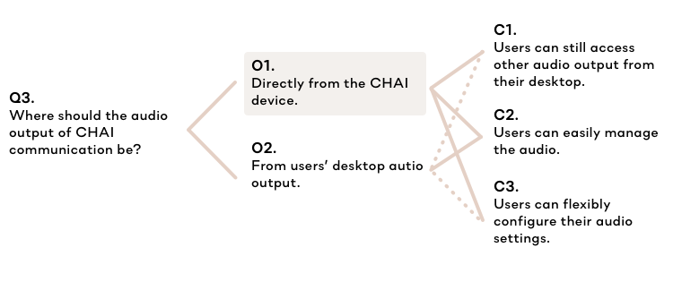
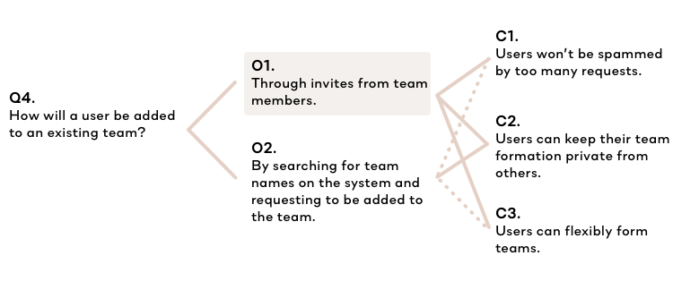
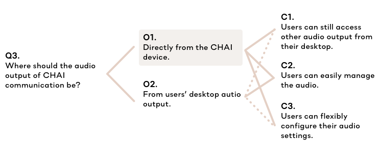
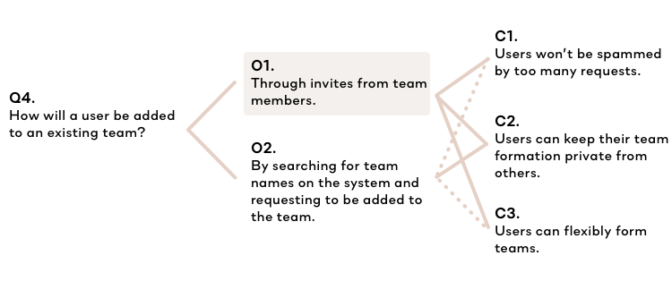
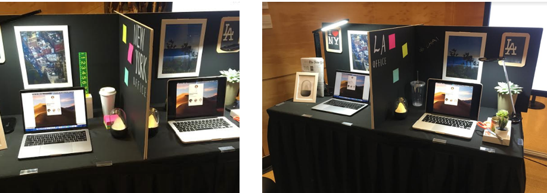

CHAI
For a product development course, I worked in an interdisciplinary group to develop a product concept that improves the wellbeing and work performance of remote workers, an increasing population in the US.
Our group won the first place among all participating groups.
Project Duration
1 semester
Sep 2019 - Dec 2019
My Role
UX Researcher &
software UX designer
I worked with...
1 product and brand designer
2 business analysts
1 product engineer
Methods & Skills
In-depth interview
Affinity diagramming
Concept testing
Persona
User journey map
Prototyping & test
Conjoint analysis
Tools
Sketch
Adobe After Effects
InVision Studio
WHAT IS CHAI?
As if working side by side, a communication system built for the wellbeing of remote workers
Working from home is lonely and can lead to an unhealthy lifestyle. It shouldn’t be.
CHAI is a real-time communication system that provides audio connection between you and your team, as if you were working in the same office. The seamless collaboration allow users to stay easily connected and avoid the need to impose on teammates with calendar invites and texts.

Physical prototype of CHAI hardware concept.
9:15 AM | Walk in to work
See CHAI light up to display who else is already working in the morning. Be motivated to join your team!
CHAI lights up as your teammates start their day.
Log in to CHAI and say hi to the team.
12:15 PM & 3:15 PM | Away mode at lunch and meetings
Set your status to be away at lunch time to pause audio connection. CHAI also syncs with your calendar and auto-mutes when you have a scheduled meeting.
Take a lunch break and set your status to 'away'.
CHAI automatically changes your status when you have a meeting.
6:35 PM | End of day
Watch CHAI dim as people finish up their work. Say goodbye to anyone still working and log off to enjoy your life.

Wrap up with work and say good bye to teammates.
THE PROCESS
PROCESS AT A GLANCE
Rapid product development process
Our team adopted a rapid product development approach, which involved researching the problem space, scoping and re-scoping, as well as ideating and iterating evolving design concepts. Our product concept and business idea have undergone three rigorous panel reviews by industry professionals.
CHAI development process.
DESIGN CHALLENGE
Develop a pyhsical product costing no more than 200 USD to help single working adults establish healthy habits.
Throughout the 3-month long semester, our team competed with 6 other groups in class to win a product design competition that aimed at improving the health of single working adults aging 25 to 35.
DISCOVER
Exploring user needs and market opportunities
Through 14+ user interviews and table research, we collected health concerns of our potential target users in 4 different categories to better understand the problem space, which were synthesized into 4 different personas.
Affinity wall synthesizing key health concerns in the areas of .
Initial personas synthesized from data collection.
DEFINE & DEVELOP
Dealing with fuzziness: Moving back-and-forth between ideation and rescoping stages
From the research findings, we started to brainstorm a number of potential product concepts and crafted low-fidelity prototypes for each concept. In order to converge different ideas to one product concept focus, we conducted a concept test with 34 participants to forcaste potential market share, as well as an internal anonymous questionnaire among all teammates to evaluate which concept we would like to focus on.
Product concepts brainstormed by the teammates addressing different problems.
Results of the concept test and and internal sruvey evaluating perceived project success.
From the results, we discovered a discrepency between the team's preferences and the results of the concetp test. After reviewing our methodology, we realized that most of our recruited participants were current students, and thus may have led to biased results. We collected more feedback from interviewing experienced remote workers and data from table research.
To our surprise, all remote workers we interviewed really like the idea of 'cubicle buddies'. This helped us validate the user needs for this concept and decide to focus on this product idea for the greatest team success.
Table research results for remote workers.
Competitive analysis for 'cubicle buddies', the initial product concept of CHAI.
User journey map of Remote Rachel's typical work day, synthesized from more users research.
IDEATE & MAKE
How might we help single working adults establish healthy habits?
How might we help remote workers feel less socially isolated at work?
After the research phase, we re-scoped our project to focus on improving the wellbeing of remote workers. Based on our research, the major pain point that remote workers have is social isolation, which may also lead to unstructured lifestyle and chronic loneliness. Throughout a 30-minute brainstorming session, the team reached to a consensus to develop a communication system that helps remove the isolation experienced by remote workers by connecting them together, as if they are working at the same cubicle.
Notes from a team brainstorming session with potential solutions to the 'How might we' statement. At the bottom, 'desk monster' and a draft of the idea, was the initial concept for CHAI.
Physical device design iterations
In order to determine the look and feel of the physical product, we conducted another concept test with 30 participants to understand user preference on the product design style. Initially, the options ranged from playful to professional, and from non-anthropomorphized to anthropomorphized. We then narrow down to 9 key design concepts to test with. The results showed that 'natural', 'animal', and 'interactive' are the most popular styles. Our product designer iterated the design based on the 'natural' style.
Product desgin concepts generated by all teammates and a narrowed-down version for testing purposes.
Product desgin iterations.
System interaction design
I worked closely with the product engineer and product designer to design an interactive system for CHAI. To engage the whole team with the design process, I hosted a participatory design workshop, where we discussed major features for the software system and brainstormed possible interface design.
Participatory design session with three teammates.
Working with the produt engineer, I created a storymap and a userflow for CHAI that delineates the different interactions of the desktop application as well as the hardware device.

User story map.
Final user flow for CHAI.
Throughout the process, we have made several important design decisions for the spec of the system's MVP.
 



Major design considerations for CHAI's interaction using QOC analysis.
I created a design system for CHAI's desktop interface that matches the brand visual.
Style guide for CHAI desktop app.
DELIVER
Tradeshow and outcome
Our product concept have been showcased on both online and physical tradeshows, where we have the most cumulated product sales and revenue of all participating teams. We have also received great interest from remote workers and potential investors.
